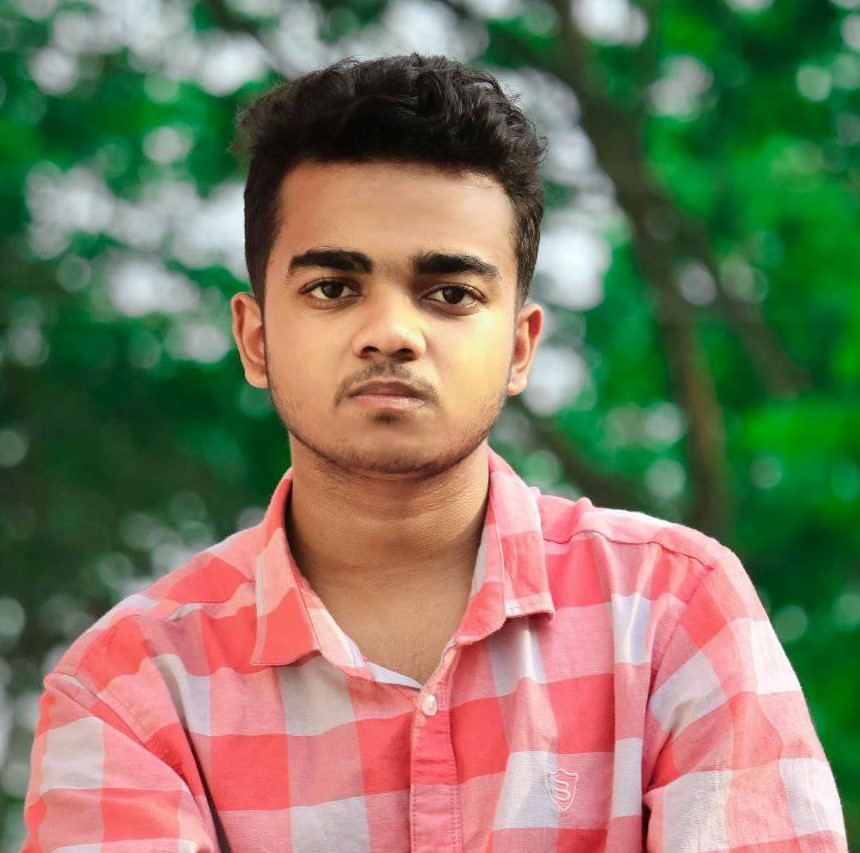

Md Imtiaj Ahmmed
Web-Designer, Internet-Expart
Web-Designer, Internet-Expart
ABOUT ME
Md Imtiaj Ahmmed is a young Bangladeshi Youtuber & Web Designer.
Md Imtiaj Ahmmed was born into a middle-class Muslim family in the Bhola district.
Imtiaj's father was an ideal religious and Imtiaj's mother was a Madrashah Teachers.
Md Imtiaj Ahmmed was fascinated with technology from an early age and spent most of his time
studying as well as his technology.Imtiaj was always thinking of doing something new and Imtiaj's
family was very supportive of his work. Imtiaj spent his childhood and education in the Bhola
district.
When Md Imtiaj Ahmmed was in class ( 9 ) Nine in high school, he started researching
programming on Google and he created his very first website. After creating his very first website,
he became more interested in researching programming and decided to build his career with his own
technology.
Md Imtiaj Ahmmed had small successes when it came to building a career in programming, which
led him to continue to study these subjects, and he mastered most of the technical subjects.
Md Imtiaj Ahmmed loves to travel, sing any Islamic songs, and read storybooks. and roughly he
is a content creatore of internet He prefers to sing Islamic songs in his spare time.
Basic Information
Full Name: Md Imtiaj Ahmmed